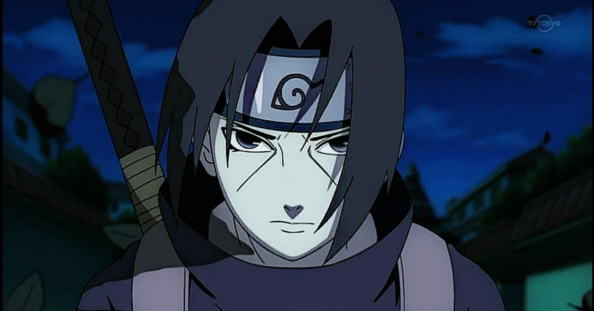

Itachi Uchiha (うちは イタチ, Uchiha Itachi) is a character in the Naruto manga and anime series created by Masashi Kishimoto. Itachi is the older brother of Sasuke Uchiha, and is responsible for killing all the members of their clan, sparing only Sasuke. He appears working as a terrorist from the organisation Akatsuki and serves as Sasuke's greatest enemy. During the second part of the manga, Itachi becomes involved in attacks to ninjas possessing tailed-beast creatures until facing Sasuke in a one-on-one battle. Although Itachi perishes during the final duel, it is later revealed that Itachi had a secret reason for assassinating the Uchiha clan. Itachi is a playable character in most of the video games from the series.

Itachi Uchiha